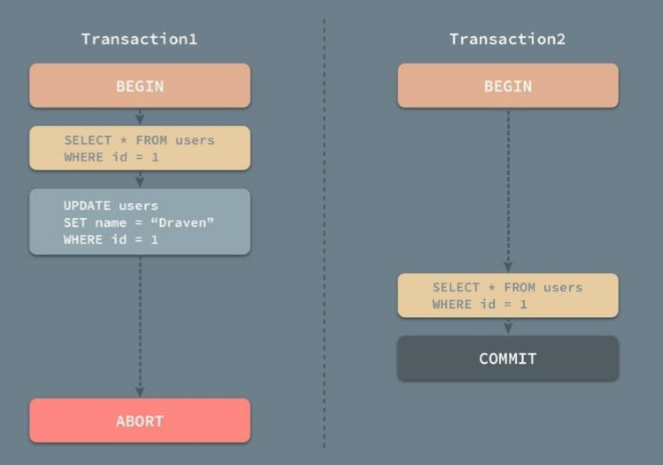
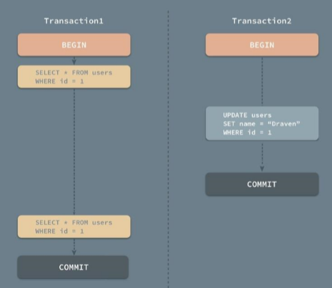
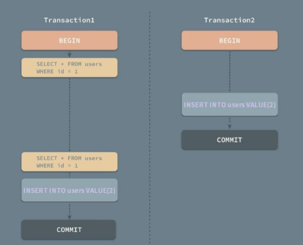
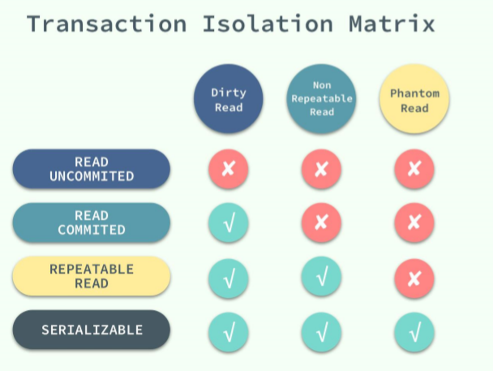
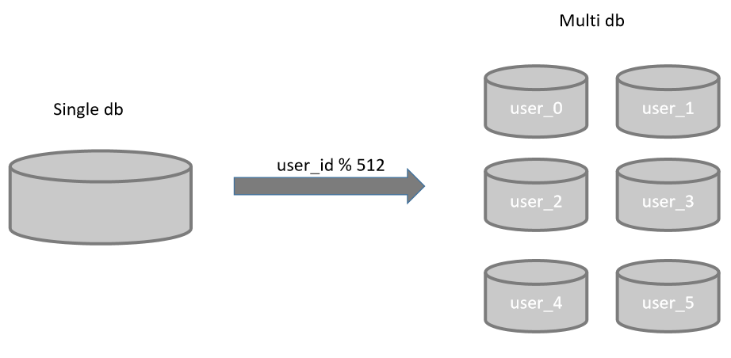
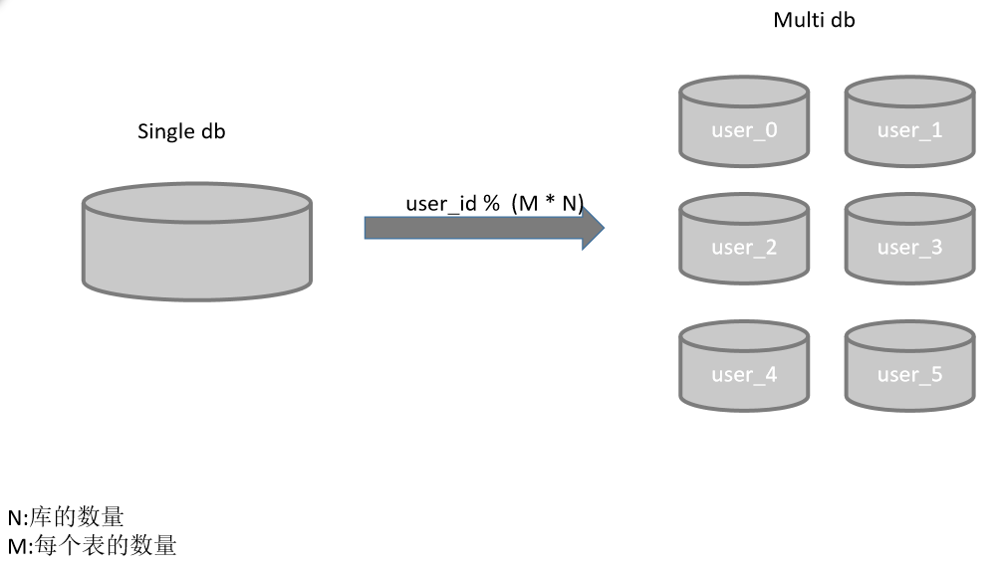

Mysql简介
MySQL 是最流行的关系型数据库管理系统，在 WEB 应用方面 MySQL 是最好的 RDBMS(Relational Database Management System：关系数据库管理系统)应用软件之一。mysql是基于innoDB数据库引擎的。
Mysql常用操作
Linux登录mysql。
1 | [root@host]# mysql -u root -p |
1.库操作
1 | --建库 |
2.表操作
1 | --建表 |
3.增
1 | INSERT INTO table_name ( field1, field2,...fieldN ) |
4.删
1 | DELETE FROM table_name [WHERE Clause] |
5.改
1 | UPDATE table_name SET field1=new-value1, field2=new-value2 [WHERE Clause] |
6.查
1 | SELECT column_name,column_name FROM table_name [WHERE Clause] [LIMIT N][ OFFSET M] |
Mysql事务（ACID）
MySQL 事务主要用于处理操作量大，复杂度高的数据。比如说，在人员管理系统中，你删除一个人员，你既需要删除人员的基本资料，也要删除和该人员相关的信息，如信箱，文章等等，这样，这些数据库操作语句就构成一个事务！
1.Atomiciy原子性
一个事务必须保证其中的所有的操作作为一个整体去执行，要么全部执行，要么全部回滚，不可能存在只执行了一部分这种情况出现。
2.Consistency一致性
数据必须保证从一种一致性的状态转换为另一种一致性状态。 比如king转账 10000 到lee账号。king账户扣款后系统崩溃了，数据也不会出现king的账户少了 10000 块，但是lee的账户没变的情况。要么维持原装（全部 回滚），要么king少了 10000 块同时lee多了 10000 块，只有这两种一致性状态的.
3.Isolation隔离性
在一个事务未执行完毕时，是否允许其他的session见到这个事物.
数据库允许多个并发事务同时对其数据进行读写和修改的能力，隔离性可以防止多个事务并发执行时由于交叉执行而导致数据的不一致。事务隔离分为不同级别，包括
1. 读未提交（Read uncommitted）
事务中的修改，即使没有提交，对其他会话也是可见的。可以读取未提交的数据——脏读。脏读会导致很多问题，一般不适用这个隔离级别

2. 读提交（read committed）
一般数据库都默认使用这个隔离级别（mysql不是），这个隔离级别保证了一个事务如果没有完全成功（commit执行完），事务中的操 作对其他会话是不可见的。但是，commit之后是可见的了，这样会产生不可重复读，比如事物1有两次查询得到的结果不一样。

3. 可重复读（repeatable read）
一个事务中多次执行统一读SQL,返回结果一样。 这个隔离级别解决了脏读的问题，和不可重复读的问题。但是可能会引起幻读的
问题

4. 串行化（Serializable）
innodb中使用next-key锁对”当前读”进行加锁，锁住行以及可能产生幻读的插入位置，阻止新的数据插入产生幻行，最强的隔离级别，通过给事务中每次读取的行加锁，写加写锁，保证不产生幻读问题，但是会导致大量超时以及锁争用问题。

4.Durability持久性
事务一旦commit，则数据就会保存下来，即使提交完之后系统崩溃，数据也不会丢失.
MYSQL 事务处理主要有两种方法：
1、用 BEGIN, ROLLBACK, COMMIT来实现
BEGIN开始一个事务ROLLBACK事务回滚COMMIT事务确认
2、直接用 SET 来改变 MySQL 的自动提交模式:
SET AUTOCOMMIT=0禁止自动提交SET AUTOCOMMIT=1开启自动提交
在 MySQL 命令行的默认设置下，事务都是自动提交的，即执行 SQL 语句后就会马上执行 COMMIT 操作。因此要显式地开启一个事务务须使用命令 BEGIN 或 START TRANSACTION，或者执行命令 SET AUTOCOMMIT=0，用来禁止使用当前会话的自动提交。
存储过程
什么是存储过程
存储过程
是在大型数据库系统中，一组为了完成特定功能的SQL 语句集，存储在数据库中，经过第一次编译后再次调用不需要再次编译，
用户通过指定存储过程的名字并给出参数（如果该存储过程带有参数）来执行它。存储过程是数据库中的一个重要对象，任何一个设计良好的数据库应用程序都应该用到存储过程。
为什么要用存储过程
存储过程真的那么重要吗，它到底有什么好处呢？存储过程说白了就是一堆SQL 的合并。中间加了点逻辑控制。
1.存储过程处理比较复杂的业务时比较实用。具体分为两个方面：
(一)响应时间上来说有
优势：如果你在前台处理的话。可能会涉及到多次数据库连接。但如果你用存储过程的话，就只有一次。存储过程可以给我们带来运行效率提高的好处；
(二)、从安全上使用了存储过程的系统更加稳定：程序容易出现BUG 不稳定，而存储过程，只要数据库不出现问题，基本上是不会出现什么问题的。
2.数据量小的项目不用存储过程也可以正常运作。
什么时候才需要用存储过程
存储过程不仅仅适用于大型项目，对于中小型项目，使用存储过程也是非常有必要的。
其优势主要体现在：
1.存储过程只在创造时进行编译，以后每次执行存储过程都不需再重新编译，而一般SQL 语句每执行一次就编译一次所以使用存储过程可提高数据库执行速度。
2.当对数据库进行复杂操作时(如对多个表进行Update,Insert,Query,Delete 时）可将此复杂操作用存储过程封装起来与数据库提供的事务处理结合一起使用。
这些操作，如果用程序来完成，就变成了一条条的SQL 语句，可能要多次连接数据库。而换成存储，只需要连接一次数据库就可以了。
3.存储过程可以重复使用
可减少数据库开发人员的工作量。
4.安全性高
可设定只有某此用户才具有对指定存储过程的使用权。
5.更强的适应性
由于存储过程对数据库的访问是通过存储过程来进行的，因此数据库开发
人员可以在不改动存储过程接口的情况下对数据库进行任何改动，而这些改动不会对应用程序造成影响。
6.分布式工作
应用程序和数据库的编码工作可以分别独立进行，而不会相互压制。
一般来说，存储过程的编写比基本SQL语句复杂，编写存储过程需要更高的技能，更丰富的经验。
系统开发中存储过程使用的优势和劣势
优点如下：
- 执行效率高.
- 安全性能好。
- 对于一些场合非常容易实现需求。
缺点如下：
- 可维护性比较差。
- 可读性也差。
在开发系统时存储过程不要滥用，有些能够在代码中实现而且对系统性能影响不大的操作就不用写在存储过程中了，而且考虑发布容易的问题，可以考虑在服务端完成一些业务操作，使用服务代替一部分存储过程的功能。
使用
语法：
1 | create procedure 存储过程名字 ( [in|out|inout] 参数 datatype ) |
调用：
1 | call procedure_name(参数列表) |
备份
为什么要备份
- 保证数据安全与完整
企业的数据安全应该来说是企业的命脉，一旦丢失或造成损坏，轻则损失客户与金钱，重则倒闭。备份的目的：为了保证数据在被人为失误、操作不当、蓄意等情况下删除或损坏后，能及时、有效的进行恢复并不会很大程度上影响到业务运行。 - 为业务提供不间断服务
实际生产环境对数据库的要求，首先就是具备7×24×365不间断服务的能力，这也是一定要备份数据库的其中原因之一。备份的方式
- 逻辑备份
其实就是利用MySQL数据库自带的mysqldump命令，或者使用第三方的工具，然后把数据库里的数据以SQL语句的方式导出成文件的形式。在需要 恢复数据时，通过使用相关的命令（如：source ）将备份文件里的SQL语句提取出来重新在数据库中执行一遍，从而达到恢复数据的目的。 - 物理备份
物理备份就是利用命令（如cp、 tar、 scp等）直接将数据库的存储数据文件复制一份或多份，分别存放在其它目录，以达到备份的效果。这种备份方式，由于在备份时数据库还会存在数据写入的情况，一定程度上会造成数据丢失的可能性。在进行数据恢复时，需要注意新安装的数据的目录路径、版本、配置等与原数据要保持高度一致，否则同样也会有问题。所以，这种物理备份方式，常常需要在停机状态下进行，一般对实际生产中的数据库不太可取。因此，此方式比较适用于数据库物理迁移，这种场景下这种方式比较高效率。 - 全量与增量备份
全量备份：
就是将数据库中的所有数据，或者是某一个特定的库里的所有数据，一次全部备份下来。
1）备份数据库中所有数据mysqldump -A --single-transaction ｜gzip>/server/backup/All_data_$(date +%F).sql.gz
2）备份某个库的数据mysqldump --single-transaction -B ClondVoice｜gzip>/server/backup/ClondVoice_$(date +%F).sql.gz
3）恢复日志mysql -uroot –p123 -h 192.168.2.127 < /server/backup/mysql_$(date +%F).sql
增量备份:
指的是上一次全量备份之后到下一次全量备份这前这段时间内数据库所更新或者是增加的数据，将其备份下来。
备份日志：
增量备份依赖我们上一次的全量备份，比如我们8月28日做了一次全量备份：mysqldump -u root -p --lock-all-tables --flush-logs --master-data = 2 | gzip > /server/backup/mysql_20190828.sql.gz
对于myisam来讲我们使用--lock-all-tables是备份的时候锁住所有的表，不允许写入，以保证数据的一致性，innodb中使用—single-transaction替换。--flush-logs指结束当前的binlog日志，开启一个新的日志；--master-data = 2，会在mysql的备份日志中记录完成备份后binlog的位置，用于日志恢复参考的起始点。例如我们也可以通过show master status查看这个记录点。
比如我们会在mysql_20190828.sql文件中查看到以下信息： -- CHANGE MASTER TO MASTER_LOG_FILE='mysql-bin.000002', MASTER_LOG_POS=107;
登录mysql后，执行以下两条语句，则会生成一个新的binlog日志，比如生成新的binlog为mysql-bin.000005，则全备后的日志包含binlog.000003, mysql-bin.000004。这两个日志文件即为增量日志文件。
1 | flush tables with read lock; |
恢复日志:mysqlbinlog /server/backup/mysql-bin.000003 /server/backup/mysql-bin.000004 | mysql -uroot -p123456;
MySQL集群解决方案？
首先我们要明白集群有两点作用：增强吞吐量和高可用。
怎么做呢？看下面一一对应的解决方案。
- 高可用 — 主从同步
- 高并发 — 读写分离与分库分表
- 自动扩容 — 部署机器好扩展
通常环境分析：
4. 博客 ，评论，读多于写场景 （可以参考：MySQL写，Redis读的读写分离方案：master写当redis读为空的时候，去slave读取。同时保持master-slave同步）
5. 定位，日志，写多于读场景
6. 一起写，读与写一样多
分库
目的：解决高并发插入多数据

分表
目的：解决查询速度慢

又12点了，睡觉！！！